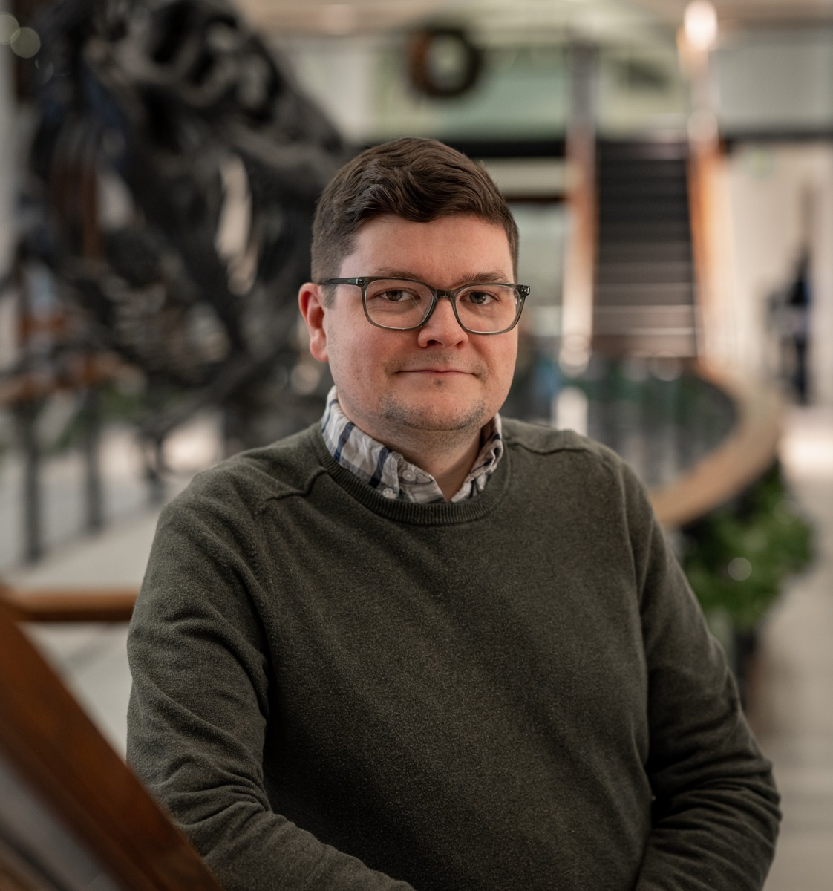
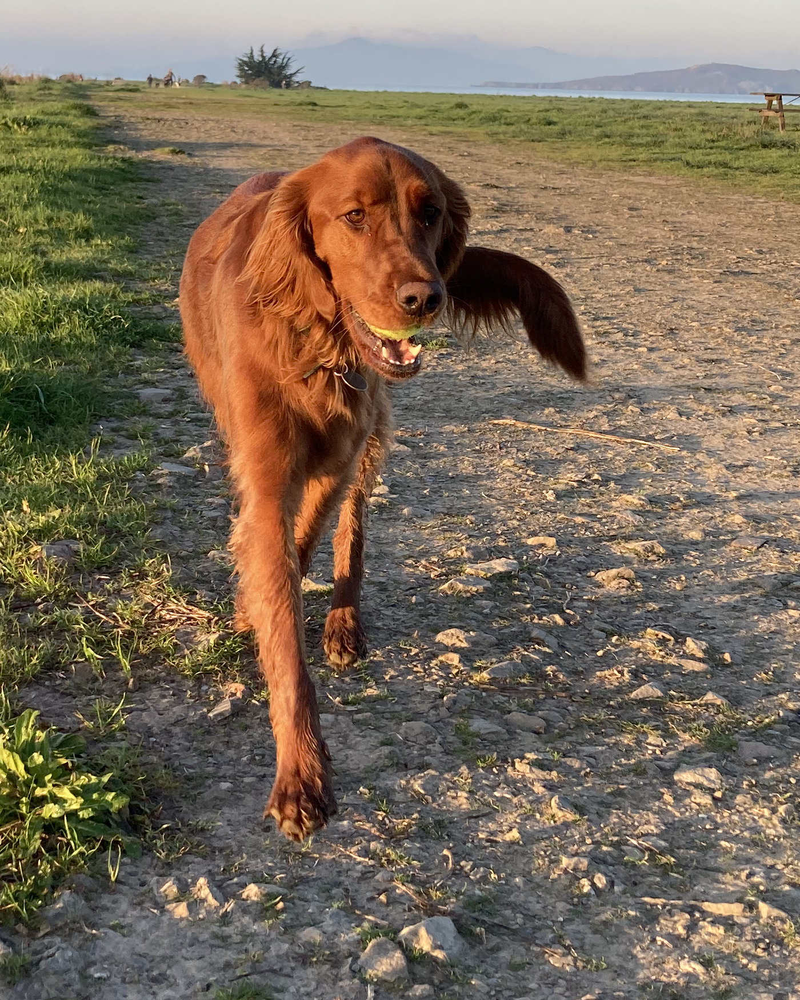

Team
Stephen J. Gaughran
Principal Investigator

Originally from New York’s Hudson Valley, Stephen grew up at the meeting point of mountainous forests and one of the world’s most urbanized metropolitan areas. He earned a B.A. in Environmental Biology from Columbia University in 2011 and an M.Res. in Marine Mammal Science from the University of St Andrews in 2013. After two years as program manager of the Institute for Comparative Genomics at the American Museum of Natural History, Stephen pursued a Ph.D. in Ecology and Evolutionary Biology at Yale University, working with Gisella Caccone. In 2021, he joined the labs of Bridgett vonHoldt and Andrea Graham at Princeton University as an NSF Postdoctoral Research Fellow.
In 2025, Stephen joined the Department of Integrative Biology at UC Berkeley as an Assistant Adjunct Professor, where his research focuses on understanding the evolution of adaptive and deleterious variation in natural populations by combining evolutionary genomics, functional genomics, pedigree estimation, and temporal sampling.
Email: sjgaughran[at]berkeley[dot]edu
Current Undergraduate Researchers
- Aditya Karthik (2025–Present)
- Naomi Lojo (2026–Present)
- Katherine Low (2026–Present)
- Johnny McNeil (2025–Present)
- Reuben Ockman (2025–Present)
- Ojas Sathaye (2025–Present)
- Luke Wang (2026–Present)
Lab Mascot

Ruby Gaughran-Gould
Adopted in New Jersey, Ruby is currently working towards her B.A. (Bachelor of Arfs) at the University of California, Bark-eley. Her hobbies include playing fetch, stealing socks, and hiking with Stephen and Colin.
Lab Alumni
- Anthony Ho (2025–2026)
- Ashley Kim (2025–2026)
- Leyan Wang (2025)